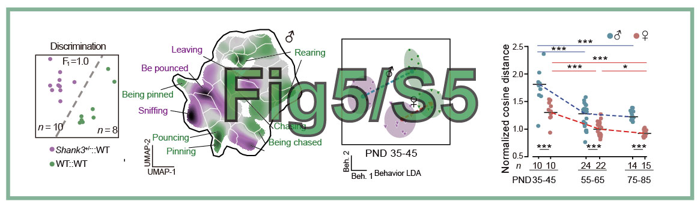
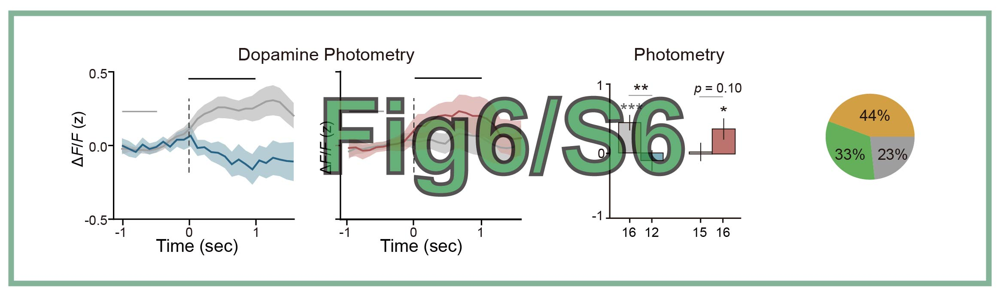
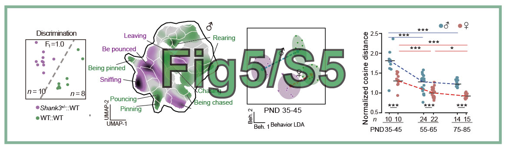
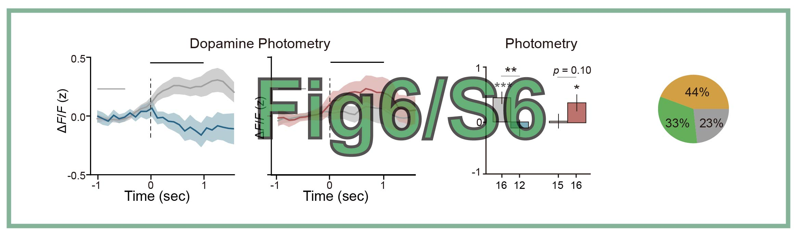

论文代码复现
"(2025) Decoding the Valence of Developmental Social Behavior: Dopamine Governs Social Motivation Deficits in Autism. In preparation"
作者: 陈昕枫, 2025-08-09
修改: 陶现明，2025-08-15
Figures 图库
运行此仓库中的代码以复现论文中的图表。


 




代码和数据下载
数据和代码已开源，链接为 Figshare_DATA_20250818.zip (~1.0 GB)。
下载后解压到文件夹，命名为Figshare。
安装
支持 Windows、Linux 和 MacOS 系统。
首先，通过 uv 工具安装依赖环境。
!!!warning "警告”
不要同时使用 uv 和 conda。这会导致包安装冲突。在运行以下代码之前，请先运行 conda deactivate。
# 在运行以下代码之前，请下载 FIGSHARE 代码和数据。
unzip Figshare_DATA_2025*.zip -d Figshare
cd Figshare
python3 -m pip install uv # UV 是一个轻量级的 Python 包管理器，类似于 conda。
uv sync --index-url https://pypi.tuna.tsinghua.edu.cn/simple # 中国用户可选清华镜像源，否则安装速度很慢。
uv run python --version # 验证 Python 版本（应为 3.12）
安装自定义包
uv pip install git+https://github.com/chenxinfeng4/multiview_calib.git
git clone https://github.com/chenxinfeng4/LILAB-py.git ../LILAB-py
uv pip install -e ../LILAB-py
uv run python -m lilab.multiview_scripts_dev.p1_checkboard_global -h # 验证安装
生成单个图表：Fig1C.pdf
您可以逐个运行 Fig*/Fig*.py 中的代码来生成图表。
uv run python Fig1_S1/Fig1C.py # 结果保存到 Fig1_S1/result/Fig1C.pdf
注意: 如果出现任何错误，请确保所有数据文件都已正确下载。
通过一个命令生成所有图表
uv run python main.py test
生成 Fig1.pdf, FigS1.pdf, Fig2*.pdf, ... 结果保存到相应的文件夹中。Fig*/result/*.pdf，例如 Fig1_S1/result/Fig1E.pdf。
清理所有结果，复原
#1. 删除所有结果数据
uv run python main.py clean
#2. 或者手动删除所有结果数据
rm Fig*/result/*pdf Fig*/result/*pkl Fig*/result/*png